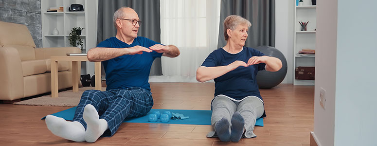
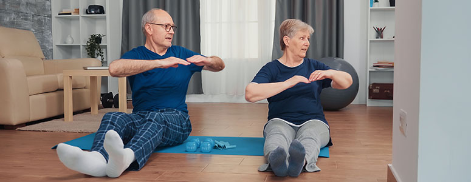

Cuidados prévios a prática de atividade física em idosos
De acordo com Professor Harry Leite, formado em pedagogia, bacharel e licenciatura em educação física:
"O envelhecimento é um processo do qual leva o indivíduo, a um desgaste natural em função da idade cronológica, pois é nesta fase da vida que existe uma maior propensão para o aparecimento de certas doenças crônico-degenerativas, e diminuição na massa muscular magra, posto que mesmo este sendo um processo biológico natural do corpo humano, a falta de exercícios regulares ao longo da vida e principalmente na melhor idade, pode levar a grandes dificuldades de locomoção e execução de tarefas diárias, nesta fase da vida existe uma maior diminuição da massa magra.
 

Um programa de treinamento regular pode levar o idoso a ter uma melhor qualidade de vida posto que para eles os exercícios físicos não tenham somente o papel de potencializar o seu desempenho para suas rotinas diárias, mas ser uma ferramenta de interversão social, com o intuito da melhora física e mental. Um dos principais motivos que levam esse grupo distinto ao treinamento de força ou cardiovascular, é a alteração na composição corporal com aumento de massa magra e diminuição de massa gorda.
O idoso necessita de alguns cuidados especiais para os treinamentos, posto que antes de qualquer rotina de exercícios físicos é extremamente necessária uma avaliação física para o sucesso do treinamento independente do gênero ou idade do aluno em questão, pois o idoso pelo fator da idade já apresenta alguns cuidados especiais que devem ser tomados caso haja alguma restrição, que pode ser relacionada às modificações progressivas da idade ou patologia das mais diversas (cardiovasculares, osteoarticulares, entre outras).
A prática das atividades físicas, serão somente realizadas quando houver o bem estar físico por parte do idoso, destacam-se ainda alguns outros cuidados, como usar roupas e calçados adequados; não se exercitar em jejum; dar preferência ao consumo de carboidratos antes dos exercícios; respeitar os limites pessoais, interromper o exercício caso haja dor ou desconforto; evitar extremos de temperatura e umidade; iniciar atividades lentas gradativamente para permitir adaptação e hidratação adequada antes, durante e após a atividade física. Recomenda-se ainda que seja orientado a aplicação dos exercícios, por profissionais capacitados."